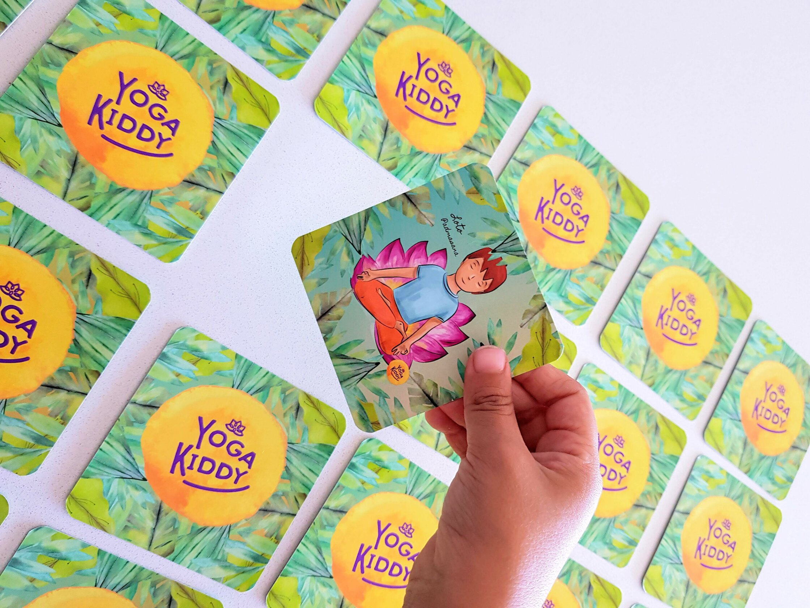

Mediante el memorice YogaKiddy, aprenden sobre las diversas posturas de yoga, como también sobre la paciencia para la espera de turnos, la tolerancia a la frustración, la creación del pensamiento divergente en la constante búsqueda de soluciones y mucho más.
Además nos permite apoyar los procesos cognitivos de atención-concentración, memoria, lenguaje, psicomotricidad, entre otras habilidades.
El yoga nos brinda la posibilidad de atender a todo el ser, escuchando y atendiendo a todos sus niveles: físico, mental, emocional y espiritual.
¿Cómo usar el Memorice YogaKiddy?
Nuestra labor es descubrir la multiplicidad del material a ocupar con nuestros niños y niñas, y es por esto que te compartimos algunas de las infinitas posibilidad que tiene el material presentado.
Opciones respetando las “normas” de un memorice: Todo memorice tiene por objetivo recordar aquellas láminas que son iguales y así conseguir puntos, pero de nosotros depende que esto sea cada vez distinto y mucho más entretenido.
Cada vez que un niño/a encuentre un par de láminas, debe mostrar y guiar al grupo para la ejecución de esa asana, favoreciendo los niveles de seguridad frente a la exposición a un grupo.
Cuando un par es encontrado, los niños/as deben dar características del asana, como por ejemplo; que partes del cuerpo trabaja, si es una postura de pie, sentado, de equilibrio, etc. Con esto, profundizamos en la práctica y el conocimiento de la acción realizada, potenciando la consciencia corporal.
También pueden jugar a que descubran que sonido puede tener cada postura y al descubrir los pares, la labor será hacer el asana y su sonido, estimulando pensamiento divergente.
Para niños/as más grandes, puedes pedirles que quien encuentre el par, elija a un compañero/a para guiarlo y enseñarle la postura, fomentando la entrega de instrucciones.
Bolsa misteriosa
Además puedes usar tus láminas para crear un bolsa misteriosa, donde dentro de ella pones las posturas seleccionadas a trabajar. Según turnos, les pides que obtengan una lámina de esta bolsa misteriosa y que cuiden que sus compañeros/as no la logren ver, para que entreguen características de ella y el grupo pueda adivinar.
El camino Yogui
Sitúas las láminas boca abajo, marcando un camino con ellas en el espacio. El juego consiste en recorrer este camino por su lado, sin pisarlas, para evitar un accidente y que cuando un instrumento suene, cada niño/a se detiene y debe voltear la lámina más cercana a él/ella. Este sonido indicará que todos y todas nos convertiremos en yoguis y yoguinis, realizando la postura de la láminas y observando al resto de los presentes.